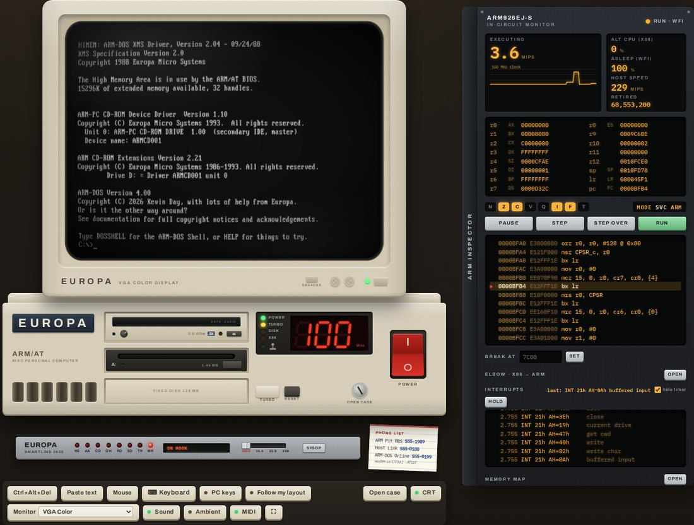

Technical reference
The ARM/AT
What is emulated, and the agreement that turns an ARM processor into an IBM PC compatible.
A PC was never really its processor. It was a pile of agreements: the interrupt table sits at address zero, the text screen lives at B800h, INT 21h with AH=3Dh opens a file, and a failed call sets the carry flag. Programs were written against those agreements, and the chip under them changed several times without most programs noticing. The ARM/AT keeps the agreements and swaps the chip.
1The ARM PC/AT design
The design rule for the whole machine is "what would IBM and Microsoft have done in 1988 if the PC had shipped with an ARM?" Every PC and DOS interface that makes sense on an ARM is kept, and only what the processor forces is changed. That leaves four real changes.
INT n becomes SVC #n
On a PC, INT 21h makes the processor fetch a handler address from the vector table at 0000:0084. Here a program executes SVC #0x21. The ARM traps into the ROM, the ROM reads the number out of the instruction itself and fetches the handler from the same table at the same address: 256 vectors of four bytes each, vector n at n*4. Programs hook interrupts with INT 21h AH=25h and chain to the old handler, exactly as on a PC. Hardware interrupts arrive the same way, as INT 08h-0Fh for IRQ 0-7 and INT 70h-77h for IRQ 8-15, and handlers send their own end-of-interrupt to port 20h.
x86 registers live in ARM registers
| x86 | ARM | Notes |
|---|---|---|
AX, AH, AL | r0, bits 15-8, bits 7-0 | AH=09h is mov r0, #0x900 |
BX, CX, DX | r1, r2, r3 | |
SI, DI, BP | r4, r5, r6 | |
DS, ES (as values) | r7, r8 | only where DOS takes a segment number, such as freeing memory |
| carry flag | the ARM's C flag | after a DOS call, bcs error is the translation of jc error |
| zero flag | the ARM's Z flag |
Segments become flat pointers
An ARM has one flat address space, so wherever DOS expects a DS:DX pair, the ARM version passes a single 32-bit pointer in the offset register. Where DOS hands out or takes a segment (memory blocks, PSPs, environments), ARM-DOS still uses a paragraph number, the address divided by 16, exactly as DOS does. All of DOS's own memory is still in the first 640 KB, so every segment still fits in 16 bits and MEM looks the way it did in 1989.
EXE files carry ARM code
Every .EXE on this machine starts with a genuine DOS MZ header and a tiny 8086 program. Copy one to a real 1989 PC and it runs, and prints This program requires an ARM processor. At the usual offset 3Ch, the header points to an ARM header (signature AR1) that describes the ARM image, its size, stack, entry point and relocation table. Programs are linked at address zero and relocated when they load, at PSP + 100h, the same place a .COM file goes. A plain .COM is a flat ARM image loaded at the same spot.
Even the floppy boot sector follows the rule. On a PC its first bytes jump over the BIOS parameter block; here they are an ARM branch over it, because the parameter block must stay at offset 0Bh.
2The processor and its JIT
The processor is an ARM926EJ-S: the ARMv5TE instruction set in both ARM and Thumb states, with the DSP multiplies and saturating arithmetic, and a VFP9-S floating-point coprocessor (VFPv2) that programs can opt into. There is no MMU, as on the simple ARM systems of the time; DOS and its programs run in a privileged mode with no protection, just like real mode. Jazelle is left out. When DOS has nothing to do, it executes the ARM's wait-for-interrupt instruction, so the processor sleeps until the next interrupt and your browser tab stays cool.
The emulator, written in JavaScript, has two tiers. An interpreter runs everything, counting how often each entry address is reached. After sixteen visits, the block from there (up to 64 instructions, continuing past conditional branches as side exits) is compiled into a JavaScript function, with the guest registers in local variables, constants folded, memory accesses inlined and a branch back to the block's start turned into a native loop. The browser's JavaScript engine then compiles that into machine code. Stores into memory that holds compiled code throw exactly the affected functions away, so self-modifying code and program loading just work.
| Benchmark (Chromium) | JIT | Interpreter |
|---|---|---|
| mixed C benchmark, ARM, bare processor | ~880 MIPS | ~155 MIPS |
At the nominal 100 MHz that is several times faster than the machine needs on a modern computer, so the real-time driver holds it back to its clock and lets the rest of the time go idle. Instruction timing is one cycle per instruction, which keeps emulated time exact: DOOM's timedemo gives the same 77 frames per second at 100 MHz on every computer.
Busy-wait loops (waiting for the vertical retrace, polling the BIOS tick) are fast-forwarded. The emulator single-steps one iteration of a suspected loop, proves it changes nothing but time, and then charges the skipped iterations up to the next moment anything could change. The result is exactly the same as running every iteration.
How we know it is right. The processor was checked against QEMU's ARM926 with more than half a million random instructions across every instruction class, with and without the JIT, and the floating-point unit with over 150,000 more cases covering rounding modes, NaNs, denormals and infinities. Every result matched.
3The memory map
| Address | What is there |
|---|---|
00000000 | the interrupt vector table, 256 four-byte vectors |
00000400 | the BIOS data area, at the PC's offsets (equipment word, keyboard buffer, video mode, tick count ...) |
00000500-0009FFFF | 640 KB of conventional memory: DOS, its buffers, the memory control blocks and programs |
000A0000-000BFFFF | video memory: VGA graphics at A0000h, text and CGA at B8000h |
000C0000-000FFFFF | the adapter and ROM hole, empty (except in video mode 62h) |
00100000-0010FFFF | the first 64 KB of extended memory, used by the BIOS for its data and stacks |
00110000-00FFFFFF | extended memory, handed out by HIMEM.SYS through XMS |
10000000-1000FFFF | the ISA I/O space: x86 port p is at 10000000h + p |
FFF00000-FFFFFFFF | the BIOS ROM, with the ARM exception vectors at the top |
ARM programs have no IN and OUT instructions, so the I/O ports are memory-mapped: outb(0x20, 0x20) is a byte store to 10000020h. Every port number is the PC's.
4The devices
| Port | Device |
|---|---|
20h, A0h | interrupt controller, 16 lines (timer, keyboard, serial, floppy, Sound Blaster, clock, MIDI, mouse, disks) |
40h-43h, 61h | 8254 timer at 1.193182 MHz, driving the timer tick and the PC speaker |
60h, 64h | 8042 keyboard controller, scan code set 1, with a PS/2 mouse |
70h, 71h | CMOS clock and battery RAM (kept in your browser) for BIOS SETUP |
00h-0Fh, C0h-DFh | the AT's pair of 8237 DMA controllers, with page registers |
1F0h, 170h | IDE: the hard disk (ATA) and the CD-ROM drive (ATAPI) |
300h-307h | the floppy controller: a simplified ARM-PC design with its own DMA, on the port range of IBM's old prototype card |
3C0h-3DFh | VGA (or a Hercules card at 3B0h-3BFh) |
220h, 388h | Sound Blaster 16 with its OPL3 FM chip |
330h | MPU-401 MIDI interface with a General MIDI synthesiser behind it |
201h | game port for two joysticks |
3F8h | COM1, a serial console shown on the page |
2F8h | COM2, a 16550A with an internal Hayes modem |
| LPT1 | an Epson FX-80 style dot-matrix printer |
F0h-FFh | the ARM-PC system board: board ID, clock speed, TURBO, the X86 lamp, and small mailboxes the page reads |
Each device is modelled closely enough for DOS programs of the time to drive it directly, the way they did. The timer can be reprogrammed and counted, the keyboard controller can be hooked at INT 9, and the game port's one-shots take real (emulated) time to settle, so the counting loops old games used give the numbers they expect at any clock speed.
The game port takes real game controllers through the browser's Gamepad API, or the on-screen pad's JOY mode, as analogue PC joysticks.
Opening the case lets you change the hardware: VGA or Hercules, Sound Blaster 16 or an AdLib-only card or nothing, 1 to 16 MB of SIMMs, the modem card, the CD-ROM drive, the MIDI daughterboard, the mouse and the clock jumper. The BIOS finds out what is fitted at the next power-on, as a real one did.
5Video
The VGA renders from the machine's memory at 70 frames per second; it is not a terminal. It supports:
- text modes (80x25 with 9x16 cells, 40x25), with real blinking text and cursor;
- CGA modes 4, 5 and 6;
- the EGA and VGA planar modes
0Dh,0Eh,10hand12h, with 256 KB of video memory in four planes and the full register model: the sequencer, the graphics controller with its latches, rotate and logic operations and all write modes, the CRTC with split screen and panning, the attribute controller; - mode
13h(320x200, 256 colours) and the unchained "Mode X" and "Mode Y" variants that demos and games program straight into the registers; - mode
62h, the ARM/AT's own addition: 640x480 in 256 colours, linear fromA0000h. GEM uses it forGEM /V.
Register writes are placed on the scan line they happen on, so palette changes per scan line (the "copper" effects of the demo scene) are displayed as they would be on a real card.
A Hercules Graphics Card with a green, amber or paper-white monochrome monitor can be fitted instead, with MDA text and 720x348 graphics. On the page, a WebGL shader draws the picture tube: curvature, scan lines, a shadow mask, bloom, warm-up, the dot when it switches off, and the afterglow of the monochrome phosphors.
6Sound
- Sound Blaster 16 at
220h, IRQ 7, DMA 1 and 5: DSP version 4.05, 8- and 16-bit DMA playback with exact interrupt timing, and the CT1745 mixer. It sits on IRQ 7 because on this machineINT 0Dh, IRQ 5's vector, is also the ARM data-abort exception. - OPL3 FM synthesis (YMF262), emulated by a JavaScript port of the Nuked OPL3 core, with working timers so the classic AdLib detection passes.
- MPU-401 at
330hwith a General MIDI and GS wavetable daughterboard: a SoundFont player built for ARM-DOS, using a reduced GeneralUser GS sound set, with 64 voices, reverb and chorus. It is downloaded only the first time a program uses it. - The PC speaker, the fan, the power supply hum, the floppy and hard disk, the printer and the modem are all synthesised as they happen. There are no recordings anywhere.
All of the machine's audio is rendered in emulated time and played through an AudioWorklet in the browser.
7The modem and the phone exchange
COM2 is a full 16550A UART with FIFOs and interrupts, and behind it sits a Hayes-compatible modem with the AT command set, S-registers, result codes and the +++ escape with its guard time. The speed switch on its front sets the card to 2400, 14,400, 33,600 or 56,000 bits per second, and the data is paced to that rate. The modem's speaker plays the dial tone, the touch-tone digits, the ringback and the handshake of each modulation, generated from real carrier signals. The 56K handshake was tuned against a real call.
The page runs a small telephone exchange that the modem dials into:
- 555-1989 rings a second ARM PC, running in a Web Worker in the background of the page, that boots ARM-DOS and runs The ARM Pit, a bulletin board in the style of the late 1980s with message bases, file areas, ZMODEM transfers and a door game, Legend of the RISC Dragon. It is ARM code from top to bottom, like your machine.
- 555-0199 is ARM-DOS Online, a service written in JavaScript on the page. It fetches live Wikipedia and Wiktionary text, Open-Meteo weather and Hacker News stories, lays them out for 76 columns, converts pictures into interlaced GIFs and sends it all down the line in a framed protocol to the
ONLINEclient. - 555-0100 is the Host Link, which sends and receives files from your real computer with ZMODEM.
- The rest (WOPR, the talking clock, a support line with hold music, a fax machine, KREMVAX in Moscow) are small scripted endpoints.
8Disks
- Drive C: a 128 MB ATA hard disk with a partition table and a FAT16 partition. The site cuts the disk image into 256 KB chunks named by their content hash, and the disk fetches each chunk the first time DOS reads from it. While a chunk is on its way the drive simply stays busy. About 0.4 MB is enough to reach the
C:\>prompt. Sectors that DOS writes are kept in your browser's IndexedDB. - Drive A: 1.44 MB diskettes, FAT12, with the DOS 4 boot sector layout.
- Drive D: a double-speed ATAPI CD-ROM drive on the secondary IDE channel, with CD audio mixed into the Sound Blaster's CD input, a headphone jack and a volume knob. DOS reaches it through
ARMCD.SYSandARMCDEX, ARM-DOS's own CD-ROM extensions. The drive takes the Multimedia Sampler '93 disc or any ISO image you drop onto the page, read from your computer on demand.
9The page around it
The whole computer is drawn in CSS and a few small SVGs, and scales as one object. The page is a progressive web app: it can be installed to a home screen and works offline once loaded. A new release downloads in the background, complete or not at all, and takes over the next time the page loads, never under a running machine. Nothing runs until you press the power switch, and nothing plays a sound before you have touched the page.
The ARM inspector beside the machine is a real debugger. It shows the registers under their x86 names, disassembles around the program counter, pauses and single-steps, sets breakpoints (which turn the JIT off while they exist), logs every interrupt with its DOS function, and dumps memory. The memory map draws all 16 MB as a heat map of execution, reads and writes, with each DOS memory block named after its owner; it costs only a percent or two while open and nothing while closed. The ELBOW view is described on the ELBOW page.

INT 21h calls.